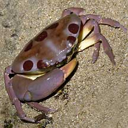
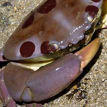
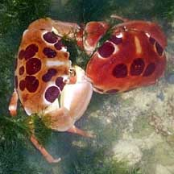

|
|
| crabs text index | photo index |
| Phylum Arthropoda > Subphylum Crustacea > Class Malacostraca > Order Decapoda > Brachyurans |
| Spotted
reef crab Carpilius maculatus Family Carpiliidae updated Dec 2019 Where seen? This crab with big red round spots is seldom seen on our shores. So far, on reefy southern shores. Features: Body width to about 9cm. This crab has a distinctive pattern of large spots on a beige to pink body. It has four blunt spines between the eyes. It is more active at night. Human uses: According to SeaLifeBase, it is collected extensively for food. While it is reported as poisonous, tests could not confirm it. Possibly the crab becomes toxic for a short period after feeding on poisonous molluscs. Status and threats: Our Spotted reef crab is listed as 'Endangered' among the threatened animals of Singapore. Like other creatures of the intertidal zone, they are affected by human activities such as reclamation and pollution. |
 Sisters Island, Jul 04 |
 |
 Kusu Island, Jun 10 Photo shared by Loh Kok Sheng on his blog. |
| Spotted reef crabs on Singapore shores |
On wildsingapore
flickr
|
| Family
Carpiliidae recorded for Singapore from Wee Y.C. and Peter K. L. Ng. 1994. A First Look at Biodiversity in Singapore in red are those listed among the threatened animals of Singapore from Davison, G.W. H. and P. K. L. Ng and Ho Hua Chew, 2008. The Singapore Red Data Book: Threatened plants and animals of Singapore.
|
|
Links
|